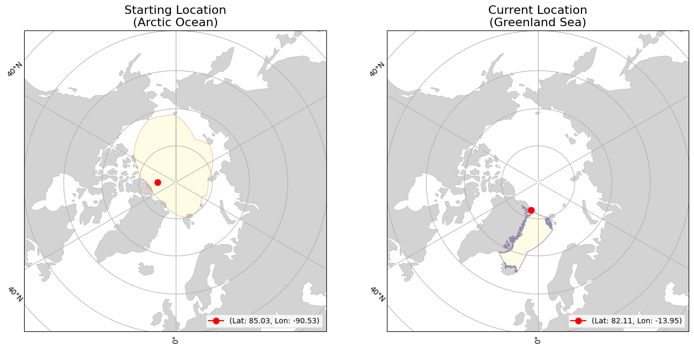

<div><div><b>Buoy Starting and Current Locations</b></div></div>
<div><div><b>Buoy Movement over Time</b></div></div>
<iframe src="300534063489300_movement.html" width="1000" height="1000" style="border:none;"></iframe>
<div>                        <script type="text/javascript">window.PlotlyConfig = {MathJaxConfig: 'local'};</script>
        <script charset="utf-8" src="https://cdn.plot.ly/plotly-2.35.2.min.js"></script>                <div id="274f8533-77c9-463b-9546-dde13d76077f" class="plotly-graph-div" style="height:600px; width:1000px;"></div>            <script type="text/javascript">                                    window.PLOTLYENV=window.PLOTLYENV || {};                                    if (document.getElementById("274f8533-77c9-463b-9546-dde13d76077f")) {                    Plotly.newPlot(                        "274f8533-77c9-463b-9546-dde13d76077f",                        [{"hovertemplate":"Date=%{x}\u003cbr\u003etotal_distance_km=%{y}\u003cextra\u003e\u003c\u002fextra\u003e","legendgroup":"","line":{"color":"#636efa","dash":"solid"},"marker":{"symbol":"circle"},"mode":"lines","name":"","orientation":"v","showlegend":false,"x":["2024-07-17","2024-07-18","2024-07-19","2024-07-20","2024-07-21","2024-07-22","2024-07-23","2024-07-24","2024-07-25","2024-07-26","2024-07-27","2024-07-28","2024-07-29","2024-07-30","2024-07-31","2024-08-01","2024-08-02","2024-08-03","2024-08-04","2024-08-05","2024-08-06","2024-08-07","2024-08-08","2024-08-09","2024-08-10","2024-08-11","2024-08-12","2024-08-13","2024-08-14","2024-08-15","2024-08-16","2024-08-17","2024-08-18","2024-08-19","2024-08-20","2024-08-21","2024-08-22","2024-08-23","2024-08-24","2024-08-25","2024-08-26","2024-08-27","2024-08-28","2024-08-29","2024-08-30","2024-08-31","2024-09-01","2024-09-02","2024-09-03","2024-09-04","2024-09-05","2024-09-06","2024-09-07","2024-09-08","2024-09-09","2024-09-10","2024-09-11","2024-09-12","2024-09-13","2024-09-14","2024-09-15","2024-09-16","2024-09-17","2024-09-18","2024-09-19","2024-09-20","2024-09-21","2024-09-22","2024-09-23","2024-09-24","2024-09-25","2024-09-26","2024-09-27","2024-09-28","2024-09-29","2024-09-30","2024-10-01","2024-10-02","2024-10-03","2024-10-04","2024-10-05","2024-10-06","2024-10-07","2024-10-08","2024-10-09","2024-10-10","2024-10-11","2024-10-12","2024-10-13","2024-10-14","2024-10-15","2024-10-16","2024-10-17","2024-10-18","2024-10-19","2024-10-20","2024-10-21","2024-10-22","2024-10-23","2024-10-24","2024-10-25","2024-10-26","2024-10-27","2024-10-28","2024-10-29","2024-10-30","2024-10-31","2024-11-01","2024-11-02","2024-11-03","2024-11-04","2024-11-05","2024-11-06","2024-11-07","2024-11-08","2024-11-09","2024-11-10","2024-11-11","2024-11-12","2024-11-13","2024-11-14","2024-11-15","2024-11-16","2024-11-17","2024-11-18","2024-11-19","2024-11-20","2024-11-21","2024-11-22","2024-11-23","2024-11-24","2024-11-25","2024-11-26","2024-11-27","2024-11-28","2024-11-29","2024-11-30","2024-12-01","2024-12-02","2024-12-03","2024-12-04","2024-12-05","2024-12-06","2024-12-07","2024-12-08","2024-12-09","2024-12-10","2024-12-11","2024-12-12","2024-12-13","2024-12-14","2024-12-15","2024-12-16","2024-12-17","2024-12-18","2024-12-19","2024-12-20","2024-12-21","2024-12-22","2024-12-23","2024-12-24","2024-12-25","2024-12-26"],"xaxis":"x","y":[3.4417598595230054,13.247131248261322,12.40818212171786,9.189166708003034,10.15954662104963,9.20535980137461,4.939910757997799,0.9187294808906884,2.662265726013135,1.2017818597678753,3.986114971861594,6.703673749487936,4.497403463985631,4.99755107926492,2.9477462860876438,10.669186168412697,2.6492434494747497,2.259657471337318,10.402206556028304,14.865276373287585,11.231803929385915,8.979293156694023,7.44644989230939,5.526786968013958,1.187839118718269,7.59755661135137,1.5841310368389998,1.8814448920584534,4.76112269763607,6.351531594948923,6.943892680609871,12.56965605549358,6.901681287301215,8.40756531917003,4.883664059078796,9.957956448590425,16.442136157856563,15.059983538445579,6.63622515312038,4.53343788046924,4.467133994950456,2.690354433854937,8.432169704560424,11.424881519087778,7.966169440333464,3.27387615453073,6.932390209680893,1.4333635438811143,2.853459823412219,7.893079873447618,11.712603200857375,14.020997024903165,12.481664154228566,9.969706718950174,10.004786191494532,0.7622655880995386,3.4793767899605665,3.1543159120934225,10.114629742363405,4.112384579168894,5.671427392132437,1.4985900777012977,2.473033655015392,3.7073760495591612,1.9501917046217219,2.8935928936816904,3.0085950494474663,3.2218785884003607,7.725286510534315,1.7680649928323149,2.7021197169481637,4.125545304942576,2.580228644491367,1.3798655934272155,2.4109209470510127,3.1601596014017685,3.5491001385681735,4.004104142587842,7.445723692510427,3.7656197149779063,2.6156289540842157,6.104831642052913,3.9396320668321603,5.3254727651252844,4.653198718044374,2.619611378951174,1.2825680216469566,5.47942269185944,5.969643784657519,7.73897870398299,6.263943522881399,3.0162314357171516,9.407926923724188,6.684427314087428,4.180277982981135,9.662305875192729,9.180348952428428,17.398312486154165,11.21701927972605,1.5891604555037422,2.6185934388309695,8.680340968767117,17.123522791132192,9.090064452376014,11.546023827779889,20.07612554634498,11.55702674453397,4.3927878853975715,3.906674131036777,2.3722809833805543,1.790384113907343,7.850690596437598,9.135818170509042,4.41771609110949,3.481612711896426,1.6812560103333958,0.6088842004668038,0.675291158494597,0.4325145186952148,11.207111594329472,8.13749188025657,1.8944833120202418,1.0032831840487668,2.494627425699896,2.89439997965713,5.4629076199696485,9.898414204160837,7.728426757914294,11.669306553887827,14.37952552734371,5.813359200818229,4.733948178826351,4.750053888591486,8.471014187048429,4.986443832743929,13.451989475738428,13.336274679637974,9.415026820254752,6.202318013972628,9.309178334428141,7.74241591300388,6.880343967005767,8.549492591319089,6.936067080095383,1.3477159493025204,3.4061150235218274,8.314285958973569,9.698041373033975,0.8379981837442781,9.467108690006773,0.9741783971961802,3.939134709932316,1.9136514885597553,0.5511130742532285,1.0627476651660919,0.023303387455134168,7.610780303785552,7.8769857356728465,6.651224180245342,3.3327562404853537,7.510953099487736,13.842462932739302,27.280004828732025],"yaxis":"y","type":"scatter"}],                        {"template":{"data":{"histogram2dcontour":[{"type":"histogram2dcontour","colorbar":{"outlinewidth":0,"ticks":""},"colorscale":[[0.0,"#0d0887"],[0.1111111111111111,"#46039f"],[0.2222222222222222,"#7201a8"],[0.3333333333333333,"#9c179e"],[0.4444444444444444,"#bd3786"],[0.5555555555555556,"#d8576b"],[0.6666666666666666,"#ed7953"],[0.7777777777777778,"#fb9f3a"],[0.8888888888888888,"#fdca26"],[1.0,"#f0f921"]]}],"choropleth":[{"type":"choropleth","colorbar":{"outlinewidth":0,"ticks":""}}],"histogram2d":[{"type":"histogram2d","colorbar":{"outlinewidth":0,"ticks":""},"colorscale":[[0.0,"#0d0887"],[0.1111111111111111,"#46039f"],[0.2222222222222222,"#7201a8"],[0.3333333333333333,"#9c179e"],[0.4444444444444444,"#bd3786"],[0.5555555555555556,"#d8576b"],[0.6666666666666666,"#ed7953"],[0.7777777777777778,"#fb9f3a"],[0.8888888888888888,"#fdca26"],[1.0,"#f0f921"]]}],"heatmap":[{"type":"heatmap","colorbar":{"outlinewidth":0,"ticks":""},"colorscale":[[0.0,"#0d0887"],[0.1111111111111111,"#46039f"],[0.2222222222222222,"#7201a8"],[0.3333333333333333,"#9c179e"],[0.4444444444444444,"#bd3786"],[0.5555555555555556,"#d8576b"],[0.6666666666666666,"#ed7953"],[0.7777777777777778,"#fb9f3a"],[0.8888888888888888,"#fdca26"],[1.0,"#f0f921"]]}],"heatmapgl":[{"type":"heatmapgl","colorbar":{"outlinewidth":0,"ticks":""},"colorscale":[[0.0,"#0d0887"],[0.1111111111111111,"#46039f"],[0.2222222222222222,"#7201a8"],[0.3333333333333333,"#9c179e"],[0.4444444444444444,"#bd3786"],[0.5555555555555556,"#d8576b"],[0.6666666666666666,"#ed7953"],[0.7777777777777778,"#fb9f3a"],[0.8888888888888888,"#fdca26"],[1.0,"#f0f921"]]}],"contourcarpet":[{"type":"contourcarpet","colorbar":{"outlinewidth":0,"ticks":""}}],"contour":[{"type":"contour","colorbar":{"outlinewidth":0,"ticks":""},"colorscale":[[0.0,"#0d0887"],[0.1111111111111111,"#46039f"],[0.2222222222222222,"#7201a8"],[0.3333333333333333,"#9c179e"],[0.4444444444444444,"#bd3786"],[0.5555555555555556,"#d8576b"],[0.6666666666666666,"#ed7953"],[0.7777777777777778,"#fb9f3a"],[0.8888888888888888,"#fdca26"],[1.0,"#f0f921"]]}],"surface":[{"type":"surface","colorbar":{"outlinewidth":0,"ticks":""},"colorscale":[[0.0,"#0d0887"],[0.1111111111111111,"#46039f"],[0.2222222222222222,"#7201a8"],[0.3333333333333333,"#9c179e"],[0.4444444444444444,"#bd3786"],[0.5555555555555556,"#d8576b"],[0.6666666666666666,"#ed7953"],[0.7777777777777778,"#fb9f3a"],[0.8888888888888888,"#fdca26"],[1.0,"#f0f921"]]}],"mesh3d":[{"type":"mesh3d","colorbar":{"outlinewidth":0,"ticks":""}}],"scatter":[{"fillpattern":{"fillmode":"overlay","size":10,"solidity":0.2},"type":"scatter"}],"parcoords":[{"type":"parcoords","line":{"colorbar":{"outlinewidth":0,"ticks":""}}}],"scatterpolargl":[{"type":"scatterpolargl","marker":{"colorbar":{"outlinewidth":0,"ticks":""}}}],"bar":[{"error_x":{"color":"#2a3f5f"},"error_y":{"color":"#2a3f5f"},"marker":{"line":{"color":"#E5ECF6","width":0.5},"pattern":{"fillmode":"overlay","size":10,"solidity":0.2}},"type":"bar"}],"scattergeo":[{"type":"scattergeo","marker":{"colorbar":{"outlinewidth":0,"ticks":""}}}],"scatterpolar":[{"type":"scatterpolar","marker":{"colorbar":{"outlinewidth":0,"ticks":""}}}],"histogram":[{"marker":{"pattern":{"fillmode":"overlay","size":10,"solidity":0.2}},"type":"histogram"}],"scattergl":[{"type":"scattergl","marker":{"colorbar":{"outlinewidth":0,"ticks":""}}}],"scatter3d":[{"type":"scatter3d","line":{"colorbar":{"outlinewidth":0,"ticks":""}},"marker":{"colorbar":{"outlinewidth":0,"ticks":""}}}],"scattermapbox":[{"type":"scattermapbox","marker":{"colorbar":{"outlinewidth":0,"ticks":""}}}],"scatterternary":[{"type":"scatterternary","marker":{"colorbar":{"outlinewidth":0,"ticks":""}}}],"scattercarpet":[{"type":"scattercarpet","marker":{"colorbar":{"outlinewidth":0,"ticks":""}}}],"carpet":[{"aaxis":{"endlinecolor":"#2a3f5f","gridcolor":"white","linecolor":"white","minorgridcolor":"white","startlinecolor":"#2a3f5f"},"baxis":{"endlinecolor":"#2a3f5f","gridcolor":"white","linecolor":"white","minorgridcolor":"white","startlinecolor":"#2a3f5f"},"type":"carpet"}],"table":[{"cells":{"fill":{"color":"#EBF0F8"},"line":{"color":"white"}},"header":{"fill":{"color":"#C8D4E3"},"line":{"color":"white"}},"type":"table"}],"barpolar":[{"marker":{"line":{"color":"#E5ECF6","width":0.5},"pattern":{"fillmode":"overlay","size":10,"solidity":0.2}},"type":"barpolar"}],"pie":[{"automargin":true,"type":"pie"}]},"layout":{"autotypenumbers":"strict","colorway":["#636efa","#EF553B","#00cc96","#ab63fa","#FFA15A","#19d3f3","#FF6692","#B6E880","#FF97FF","#FECB52"],"font":{"color":"#2a3f5f"},"hovermode":"closest","hoverlabel":{"align":"left"},"paper_bgcolor":"white","plot_bgcolor":"#E5ECF6","polar":{"bgcolor":"#E5ECF6","angularaxis":{"gridcolor":"white","linecolor":"white","ticks":""},"radialaxis":{"gridcolor":"white","linecolor":"white","ticks":""}},"ternary":{"bgcolor":"#E5ECF6","aaxis":{"gridcolor":"white","linecolor":"white","ticks":""},"baxis":{"gridcolor":"white","linecolor":"white","ticks":""},"caxis":{"gridcolor":"white","linecolor":"white","ticks":""}},"coloraxis":{"colorbar":{"outlinewidth":0,"ticks":""}},"colorscale":{"sequential":[[0.0,"#0d0887"],[0.1111111111111111,"#46039f"],[0.2222222222222222,"#7201a8"],[0.3333333333333333,"#9c179e"],[0.4444444444444444,"#bd3786"],[0.5555555555555556,"#d8576b"],[0.6666666666666666,"#ed7953"],[0.7777777777777778,"#fb9f3a"],[0.8888888888888888,"#fdca26"],[1.0,"#f0f921"]],"sequentialminus":[[0.0,"#0d0887"],[0.1111111111111111,"#46039f"],[0.2222222222222222,"#7201a8"],[0.3333333333333333,"#9c179e"],[0.4444444444444444,"#bd3786"],[0.5555555555555556,"#d8576b"],[0.6666666666666666,"#ed7953"],[0.7777777777777778,"#fb9f3a"],[0.8888888888888888,"#fdca26"],[1.0,"#f0f921"]],"diverging":[[0,"#8e0152"],[0.1,"#c51b7d"],[0.2,"#de77ae"],[0.3,"#f1b6da"],[0.4,"#fde0ef"],[0.5,"#f7f7f7"],[0.6,"#e6f5d0"],[0.7,"#b8e186"],[0.8,"#7fbc41"],[0.9,"#4d9221"],[1,"#276419"]]},"xaxis":{"gridcolor":"white","linecolor":"white","ticks":"","title":{"standoff":15},"zerolinecolor":"white","automargin":true,"zerolinewidth":2},"yaxis":{"gridcolor":"white","linecolor":"white","ticks":"","title":{"standoff":15},"zerolinecolor":"white","automargin":true,"zerolinewidth":2},"scene":{"xaxis":{"backgroundcolor":"#E5ECF6","gridcolor":"white","linecolor":"white","showbackground":true,"ticks":"","zerolinecolor":"white","gridwidth":2},"yaxis":{"backgroundcolor":"#E5ECF6","gridcolor":"white","linecolor":"white","showbackground":true,"ticks":"","zerolinecolor":"white","gridwidth":2},"zaxis":{"backgroundcolor":"#E5ECF6","gridcolor":"white","linecolor":"white","showbackground":true,"ticks":"","zerolinecolor":"white","gridwidth":2}},"shapedefaults":{"line":{"color":"#2a3f5f"}},"annotationdefaults":{"arrowcolor":"#2a3f5f","arrowhead":0,"arrowwidth":1},"geo":{"bgcolor":"white","landcolor":"#E5ECF6","subunitcolor":"white","showland":true,"showlakes":true,"lakecolor":"white"},"title":{"x":0.05},"mapbox":{"style":"light"}}},"xaxis":{"anchor":"y","domain":[0.0,1.0],"title":{"text":"Date"},"tickangle":45},"yaxis":{"anchor":"x","domain":[0.0,1.0],"title":{"text":"total_distance_km"}},"legend":{"tracegroupgap":0},"margin":{"t":60},"title":{"text":"Total Distance Traveled over Time","font":{"size":16},"x":0.5},"height":600,"width":1000},                        {"responsive": true}                    )                };                            </script>        </div>